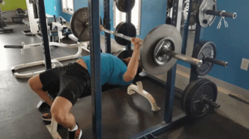
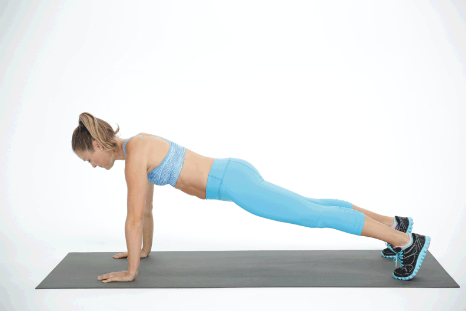

Chest and Arms Workout:The unlimited guide in 2023!
1. Warm-Up
Start with 5-10 minutes of light cardiovascular exercise, such as jogging or jumping jacks, to increase
blood flow to your muscles. Follow this with dynamic stretches for the shoulders, chest, and arms.
2. Bench Press
The bench press is a popular strength training exercise that primarily targets the muscles of the chest,
shoulders, and triceps. It is a compound exercise, meaning it involves multiple joints and muscle groups.
Here's a basic overview of how to perform a bench press:
Equipment:
1. Bench: You'll need a flat bench designed for weightlifting.
2. Barbell: Use a standard barbell, which typically weighs 45 pounds (20.4 kg) for men and 35 pounds
(15.9
kg) for women.
3.Weights: Add weight plates on each side of the barbell to increase resistance
Execution:
1.Unrack the Bar: Lift the barbell from the rack and position it directly above your chest with your
arms
fully extended.
2.Lower the Bar: Lower the barbell to your chest in a controlled manner. Keep your elbows at a
90-degree
angle or slightly lower.
3.Press the Bar: Push the barbell back up to the starting position, extending your arms fully.

3. Incline Dumbbell Press
The incline dumbbell press is a variation of the traditional bench press that specifically targets the upper
chest muscles. This exercise is performed on an inclined bench, and it offers a different range of motion
compared to the flat bench press. Here's how you can perform the incline dumbbell press:
Equipment:
1. Incline Bench: Use an adjustable bench set to an incline of around 15 to 30 degrees.
2. Dumbbells:Choose a pair of dumbbells that you can lift with control.
Execution:
1.Setup on the Bench: Adjust the incline bench to your desired angle. Sit on the bench with a
dumbbell in each hand, and place them on your thighs.
2.Grip the Dumbbells: With your palms facing forward, use your thighs to help lift the dumbbells one
at a time to shoulder height. Hold the dumbbells with an overhand grip.
3.Starting Position: Lie back on the incline bench with a dumbbell in each hand. Position the
dumbbells directly above your shoulders, arms fully extended.
4.Lower the Dumbbells: In a controlled manner, lower the dumbbells to the sides of your chest. Keep
your elbows at a 90-degree angle or slightly lower.
5.Press the Dumbbells: Push the dumbbells back up to the starting position, fully extending your
arms.

3. Dumbbell Flyes
Dumbbell flyes are an isolation exercise that primarily targets the muscles of the chest, specifically the
pectoralis major. This exercise is often used to enhance chest development and increase muscle definition.
Here's a step-by-step guide on how to perform dumbbell flyes:
Equipment:
1.Flat Bench: Use a flat weightlifting bench.
2.Dumbbells: Choose a pair of dumbbells that you can lift with control.
Execution:
1. Setup on the Bench: Sit on the edge of a flat bench with a dumbbell in each hand. Place the
dumbbells on your thighs, and carefully lie back on the bench.
2. Starting Position: Hold the dumbbells directly above your chest with your palms facing each other.
Your arms should be fully extended, and your elbows slightly bent.
3. Lower the Dumbbells: In a controlled manner, lower the dumbbells to the sides of your chest. Keep
a slight bend in your elbows throughout the movement.
4. Stretching Phase: Lower the dumbbells until you feel a comfortable stretch in your chest. Your
arms should be in line with your torso or slightly below, depending on your flexibility.
5. Lift the Dumbbells: Use your chest muscles to bring the dumbbells back to the starting position,
fully extending your arms.
.gif)
4. Push-Ups
Dumbbell flyes are an isolation exercise that primarily targets the muscles of the chest, specifically the
pectoralis major. This exercise is often used to enhance chest development and increase muscle definition.
Here's a step-by-step guide on how to perform dumbbell flyes:
Execution:
1.Setup on the Bench: Sit on the edge of a flat bench with a dumbbell in each hand. Place the
dumbbells on your thighs, and carefully lie back on the bench.
2.Starting Position: Hold the dumbbells directly above your chest with your palms facing each other.
Your arms should be fully extended, and your elbows slightly bent.
3.Lower the Dumbbells: In a controlled manner, lower the dumbbells to the sides of your chest. Keep a
slight bend in your elbows throughout the movement.
4.Stretching Phase: Lower the dumbbells until you feel a comfortable stretch in your chest. Your arms
should be in line with your torso or slightly below, depending on your flexibility.
5.Lift the Dumbbells: Use your chest muscles to bring the dumbbells back to the starting position,
fully extending your arms.

5. Barbell Curl
The barbell curl is a fundamental weightlifting exercise that targets the biceps, helping to build strength
and size in the upper arm. Here's a step-by-step guide on how to perform a barbell curl.
Equipment:
1.Barbell: Use a straight barbell with an appropriate weight. The barbell should have a grip that is
slightly
wider than shoulder-width.
Execution:
1.Starting Position: Stand with your feet shoulder-width apart, and hold the barbell with an
underhand grip (palms facing forward). Your hands should be slightly wider than shoulder-width apart.
2.Posture: Keep your back straight, shoulders back, and chest up. Engage your core muscles for
stability.
3.Elbows Close to Body: Allow your arms to fully extend, keeping your elbows close to your body. The
barbell should be in front of your thighs.
4.Curling Motion: Initiate the movement by flexing your elbows and curling the barbell towards your
shoulders. Keep your upper arms stationary and your wrists straight.
5.Top Position: Continue curling until the barbell is close to your shoulders, and your biceps are
fully contracted.
6.Lowering Phase: Lower the barbell back down to the starting position in a controlled manner, fully
extending your arms.
6. Dumbbell Hammer Curls
Dumbbell hammer curls are a bicep exercise that targets not only the biceps brachii but also the brachialis
and brachioradialis muscles. This exercise is similar to traditional dumbbell curls but with a different
grip that resembles holding a hammer. Here's a step-by-step guide on how to perform dumbbell hammer
curls:
Equipment:
1.Dumbbells: Choose a pair of dumbbells that you can lift with control.
Execution:
1.Starting Position: Stand with a dumbbell in each hand, arms fully extended, and palms facing your
body (neutral grip). Your feet should be shoulder-width apart.
2.Posture: Keep your back straight, shoulders back, and chest up. Engage your core for stability.
3.Elbows Close to Body: Allow your arms to fully extend, keeping your elbows close to your body. The
dumbbells should be in front of your thighs.
4.Curling Motion: Initiate the movement by flexing your elbows and curling the dumbbells towards your
shoulders. Keep your upper arms stationary.
5.Top Position: Continue curling until the dumbbells are close to your shoulders, and your biceps are
fully contracted.
6.Lowering Phase: Lower the dumbbells back down to the starting position in a controlled manner,
fully extending your arms.
7. Skull Crushers:
Skull crushers, also known as lying triceps extensions or French presses, are a popular isolation exercise
that targets the triceps muscles. This exercise is typically performed lying on a bench, and it involves
extending the arms and lowering a barbell or dumbbells towards the forehead, hence the name "skull
crushers." Here's a step-by-step guide on how to perform skull crushers:
Equipment:
1.Barbell or Dumbbells: Choose a weight that is appropriate for your fitness level
Execution:
1.Setup on the Bench: Lie on your back on a flat bench, feet flat on the floor. Hold a barbell with an overhand grip, hands slightly narrower than shoulder-width apart.
2.Starting Position: Extend your arms fully, holding the barbell directly above your chest with your palms facing away from you. If using dumbbells, hold one in each hand with your palms facing each other.
3.Elbow Bend: Inhale and bend your elbows, lowering the barbell or dumbbells towards your forehead. Keep your upper arms stationary.
4.Lowering Phase: Lower the barbell or dumbbells in a controlled manner, allowing your elbows to bend and bringing the weight close to your forehead.
5.Extension Phase: Exhale and extend your elbows, raising the barbell or dumbbells back to the starting position. Fully extend your arms, but avoid locking out your elbows to maintain tension on the triceps.